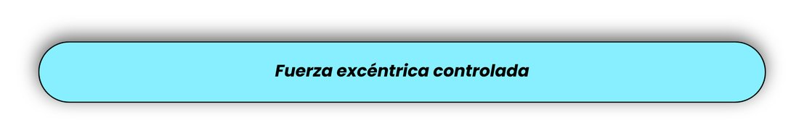
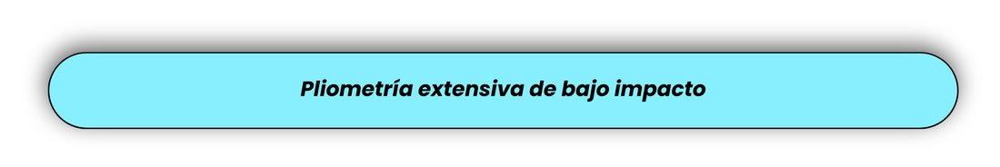
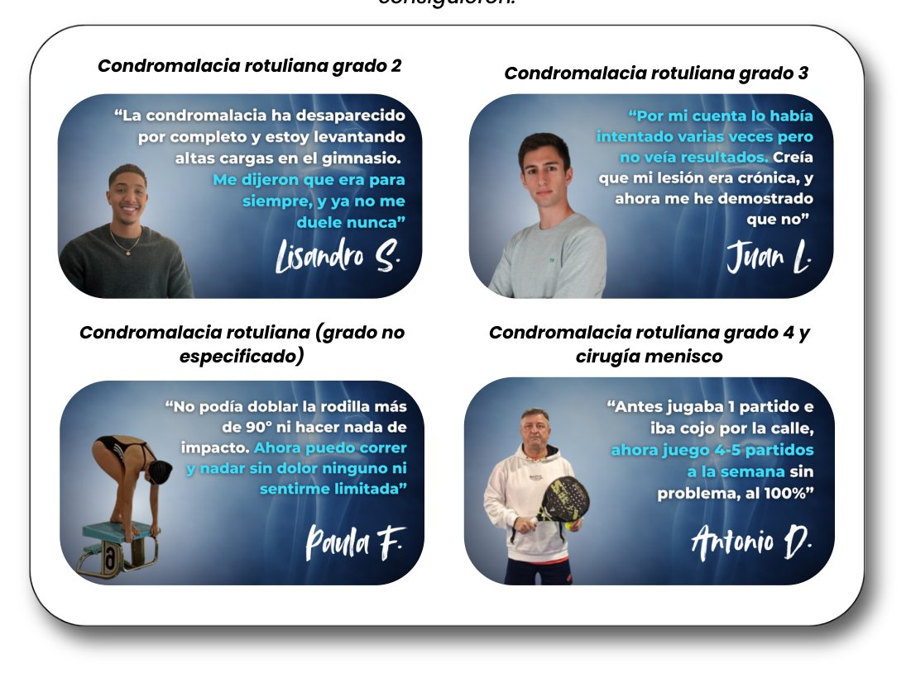
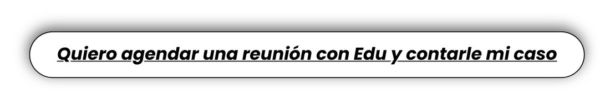

La hoja de ruta para volver a saltar y correr sin destrozar tu cartílago por la condromalacia
Especialista en readaptación de lesiones de rodilla
Antes de nada, quiero recalcar una cosa.
Si te han diagnosticado condromalacia o desgaste de cartílago, es muy probable que te hayan dado el peor consejo posible: "Deja de impactar, no corras, no saltes y haz reposo para no desgastar más la rodilla".
Esta recomendación ignora por completo la fisiología humana y condena tu rodilla a la atrofia.
El cartílago es un tejido avascular, esto significa que no tiene riego sanguíneo propio ni capacidad de regeneración directa. No le llegan nutrientes a través de las arterias → La única forma que tiene el cartílago de nutrirse, oxigenarse y mantenerse sano es mediante un proceso mecánico llamado imbibición. La imbibición funciona como una esponja: cuando la rodilla recibe un impacto controlado (compresión), el líquido sinovial y los desechos son expulsados; cuando la presión cesa (descompresión), el cartílago absorbe líquido nuevo cargado de nutrientes.
Sin impacto adaptado no hay imbibición. Sin imbibición, tu cartílago se desnutre, se debilita y se degrada más rápido.
La solución para la condromalacia nunca es eliminar el impacto, sino elevar la tolerancia de tu rodilla a ese impacto a través de la fuerza. El reposo pasivo en el sofá debilita tu cuádriceps, reduce la estabilidad rotuliana y hace que, cada vez que intentes dar un paso, la presión sobre el cartílago sea más lesiva.
No estás protegiendo tu rodilla, la estás apagando.
Para que la imbibición nutra tu cartílago sin generar picos de dolor, tu entrenamiento debe seguir una progresión obligatoria. No pases al siguiente nivel si no dominas el anterior:

Antes de moverte, genera fuerza estática. Mantener posiciones como la sentadilla isométrica contra la pared (Wall sit) a 60º u 90º activa el cuádriceps y genera analgesia (alivio del dolor), preparando el cartílago para la carga.
Ahora bien, este ejercicio se podría considerar la base, luego hay que hacer muchas variantes y otros tipos de isométricos, no te puedes quedar sólo con ese.

Mientras aprendes a dominar la estática (isométricos), deberás entrenar la fase de frenado. Ejercicios como las bajadas lentas a una pierna en cajón (Step-down) enseñan a tu musculatura a absorber la fuerza de gravedad.
Si tus músculos no saben frenar tu peso de forma controlada, tu cartílago recibirá todo el impacto al correr o bajar escaleras.

El impacto se reintroduce de forma precisa, no diciendo un día de repente → “Voy a correr, a ver si me sigue doliendo la rodilla o ya no”.
Para ello, lo mejor siempre será empezar por ejercicios de pliometría extensiva de bajo impacto, en la que realicemos saltos en el sitio a dos piernas en césped, durante 30- 60" sin dolor, y vayamos progresando en apoyos, cantidad de saltos, altura de los saltos, tipo de superficie... hasta que llegue el momento en el que estemos preparados para volver a correr.
Las personas que vas a ver a continuación, han pasado por esta situación. Les prohibieron por completo saltar, correr o “forzar” su rodilla, pero ellos no aceptaron el destino que estaban intentando implantarles.
Pincha en cada imagen y mira el vídeo de 3 minutos donde te explican cómo lo consiguieron.

No es magia, simplemente hicieron una buena progresión de impactos que les permitió eliminar su dolor, y volver a correr y saltar sin miedo.
Al igual que hicimos con ellos, a ti también podemos ayudarte a conseguir todo eso con nuestro sistema en 5 fases.

¿Quieres que lo veamos aplicado a tu caso? Cada rodilla y cada proceso es distinto, y muchas veces pequeños ajustes marcan una gran diferencia.
Escríbeme sin compromiso